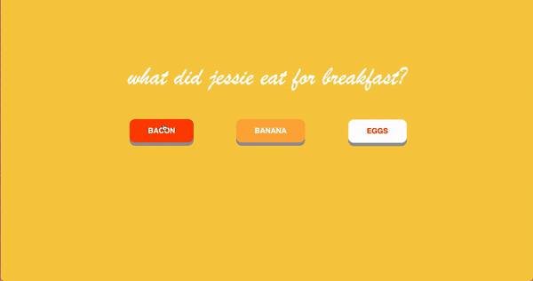

EXERCISE 1
EXERCISE 2
This project was to create a quick, single page website that illustrates a quality about today. The website had to utilize hover states in a meaningful way that helps communicate the day. We could consider adding type, imagery, CSS shapes, etc.
For this project, we typesetted a Wikipedia article of our own choice. We created a structure for our article using HTML and style it with CSS, and used Flexbox and media queries to create a responsive layout.
EXERCISE 3
EXERCISE 4
This project was to challenge our CSS and creativity by "drawing” a still life using HTML elements and a creative use of CSS. The elements in our still life was positioned within a frame using absolute and relative positioning.
For this project, we created an abstract environment or composition using CSS animations. We tried to explore formal design principles including the gestalt ideas: proximity, similarity, continuity, closure, figure/ground and formal art principles including line, shape, form, color, value, space, texture, unity, contrast, balance, movement, rhythm, pattern and emphasis!

EXERCISE 5
EXERCISE 6
We create a single page website that illustrated something about our day. Our website could be typographic or graphical, photographic or illustrative, but must change in someway when we click on part of it. We used HTML, CSS, and JavaScript together. We also used the mouse click as an opportunity to create a memorable change to our design.
For this project, we created our own drawing program using set up, draw, and mousePressed. We tried changing the shapes, adding more shapes, and seeing how much variation we can create. We then created a sketch using random and map together.